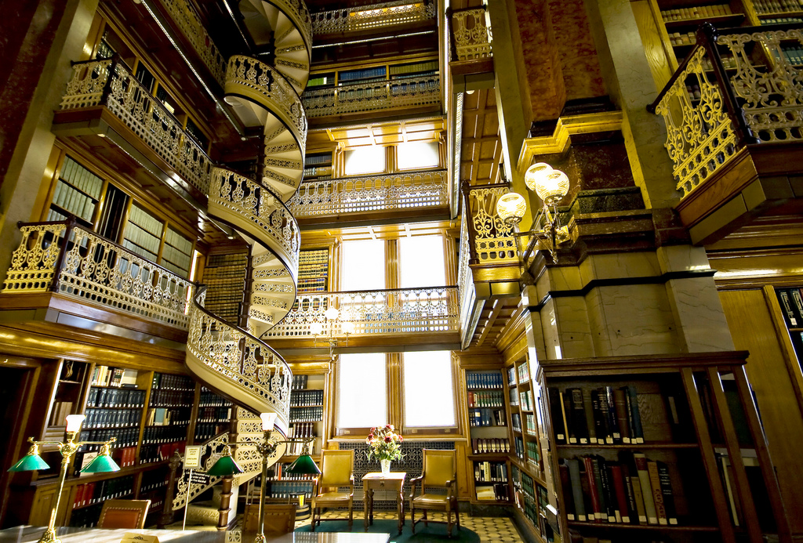
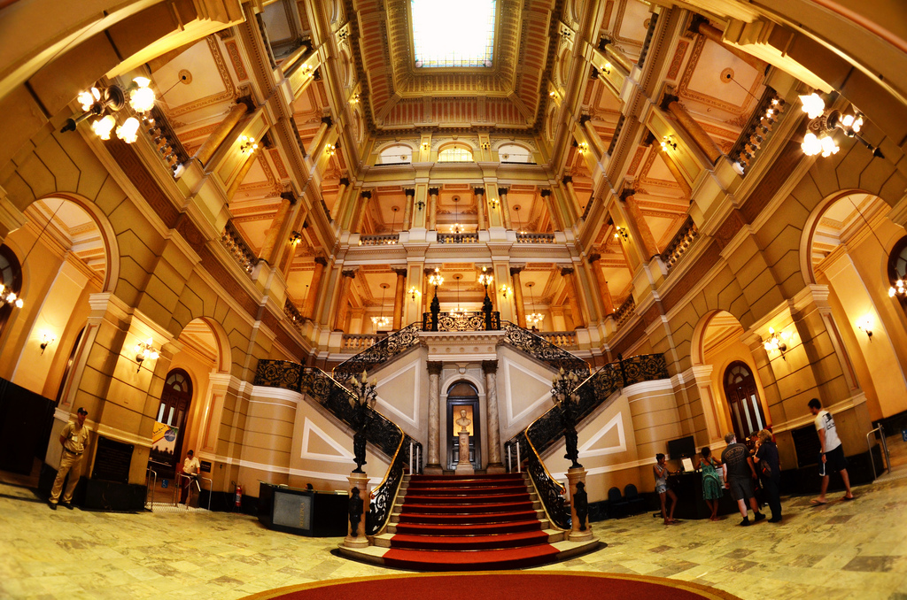

Northvale University of Technology EXPANDING YOUR FUTURE | ||||
LIBRARIESThe Northvale University has four great libraries with modernized features and up to date information on just about everything. THE NORTHERN LIBRARY has pioneering technology to match its cutting-edge design. It is home to the first Automated Storage and Retrieval System (ASRS) in any college in the America; this uses robot cranes to pick up books and convey them to the front desk. For the building’s eye-catching look, architecture firm Francis-Jones Morehen Thorp, which has offices in Australia and England, took its cues from the surrounding landscape – in particular a eucalyptus forest that graces the campus. Flora also makes an appearance on the green roof, which incorporates planted areas and grass; meanwhile, wells are used to flood the bottom floors with daylight. The stunning building – which was constructed using recycled materials – opened its doors in 2011 and contains more than 1.8 million electronic and print items.
THE SOUTHERN LIBRARY is a Law Library and is one beautiful building in which you wouldn’t mind getting lost in. The splendid space, which was fashioned in the Renaissance style in the 1880s, connects its five levels with elaborately detailed cast-iron spiral stairs and features interiors in chestnut and ash woods. Its marble flooring and walls, chandeliers, periodicals, case book materials and stacks of bookcases – through which one can browse the library’s collection of treatises – collectively create an atmosphere of learned opulence. American architects John C. Cochrane and Alfred H. Piquénard were responsible for its design as well as that of the rest of the State Capitol. The following is a person’s review about the Southern Law Library, “A gorgeous room with multiple levels of book cases and white wrought iron to lighten it up. It is funny, I went on this photo shoot, and my batteries gave out before I made it to this room. I changed to my spares....a couple shots later and low battery? What, I forgot to charge my spares? Duh!! I literally got the shots of this room by turning off camera, moving or changing out one dead battery for another that had sat for a few minutes; I would have to compose the shot, turn on camera and quick take the shot before repeating above. That will teach me to charge the batteries when I return home next time I change them.”  THE EASTERN LIBRARY by Admont Abbey, constructed in 1776, is breathtaking in its beauty. Baroque architect Joseph Hueber was tasked with developing the design for the dazzling hall. Resplendent in gold and white hues, the library is crowned with seven cupolas whose ceiling space is adorned by Bartolomeo Altomonte’s frescos representing different phases of human knowledge. It is also noteworthy for Joseph Stammel’s “Four Last Things” sculptures, which bring to life depictions of death, heaven, hell and the Last Judgment. Around 70,000 of the monastery’s approximately 200,000 volumes are stored here, and it is the largest library of its kind in the world.  THE WESTERN LIBRARY is one beautiful building in which we wouldn’t mind getting lost. The splendid space, which was fashioned in the Renaissance style in the 1880s, connects its five levels with elaborately detailed cast-iron spiral stairs and features interiors in chestnut and ash woods. Its marble flooring and walls, chandeliers, periodicals, case book materials and stacks of bookcases – through which one can browse the library’s collection of treatises – collectively create an atmosphere of learned opulence. American architects John C. Cochrane and Alfred H. Piquenard were responsible for its design as well as that of the rest of the State Capitol.
|
||||